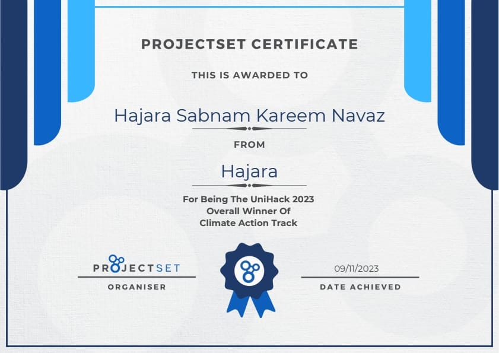
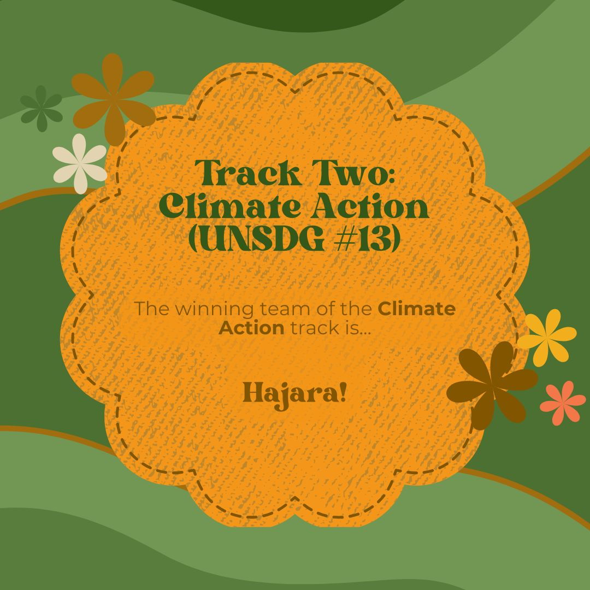

Unihack 2023 is a global hackathon organized by ProjectSet
I had participated in the Unihack 2023 individually and won in the Climate Action Track.
It was a 2-week competition, the first round being a poster making round where I had to explain my idea in a well-balanced poster presentation.
Upon qualifying this round, for the finale, I had to present my idea as a pitch through a well-put presentation.
Overall, it was a wonderful journey of learning for me. It was insightful, enriching and extremely informative which I am happy to have been a part of.
Hajara Sabnam

Track Winner in Unihack 2023 for Climate Action

